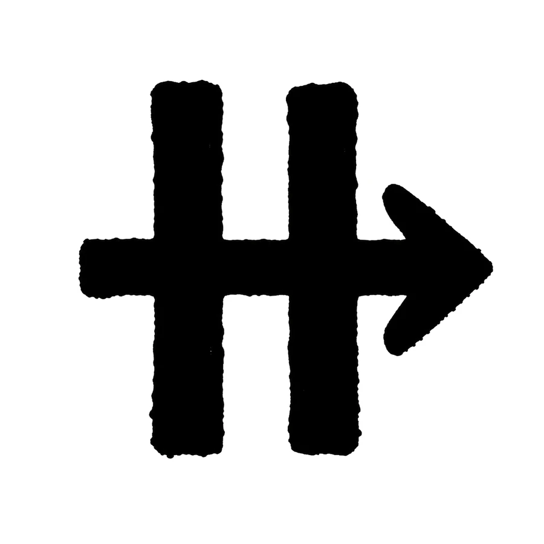

05
루프 계약
자율 루프는 신뢰가 아니라 계약으로 돈다. HITL에서는 사람이 단계 게이트를 쥐고, HOTL goalplan은 성공 기준 · 체크포인트 · 증거 원장 · Stop-continuation 정책을 명문화한 뒤에야 활성화된다.
AHITL — 사람이 게이트를 쥔다
HITL 루프에서 PABCD는 활성이지만 호스트 goal은 필요 없다. P/A/B는 인간이 확인하는 일시정지 지점으로 남고, Stop-continuation 훅은 무장하지 않는다. 자율 실행을 명시적으로 요청받지 않았다면 조용히 goal을 만들지 말고 HITL에 머무는 것이 규칙이다.
codexclaw/plugins/codexclaw/skills/loop/SKILL.md:50-56

BHOTL — goalplan이 계약서다
HOTL은 ACTIVE 호스트 goal과 진행 중인 PABCD 사이클이 동시에 있어야 성립한다. goal만 있고 PABCD가 없으면 작업 루프가 아니고, PABCD만 있고 goal이 없으면 HITL이지 HOTL이 아니다. 채팅 체크리스트로 부족할 때 goalplan이 등장한다: 목표, work-phase, 성공 기준, 체크포인트, 증거, 인터뷰의 OPEN ASSUMPTIONS, 스티어링 결정, 품질 게이트를 파일로 명문화한다.
loop/SKILL.md:57-63 · :169-179 (Contract)
등록도 게이트다: loop init 후 첫 work-phase 전에
workPhases[]와 criteria[]를 채워야 한다. 빈 init-only 플랜은 validate
게이트(E8)에서 FAIL하고, 바인딩된 goalplan이 그 게이트를 통과하지 못하는
동안 update_goal {status:"complete"}는 훅이 거부한다
(GOAL-COMPLETE-GATE-01) — 미등록 플랜은 완료를 인증할 수 없다.
CStop-continuation — 조용한 종료의 봉인
"goal은 만들었는데 PABCD에는 진입하지 않은" 턴은 더 이상 조용히 끝나지 않는다: ACTIVE goal에 in-flight 사이클이 없으면 Stop 훅이 무장 명령을 지목하며 바운디드 블록을 건다(GOAL-IDLE-CONTINUE-01).
완료 게이트의 거부 조건은 열거돼 있다: 사이클 진행 중, work-phase 미완, 기준 미충족, capturedEvidence 없는 met 마크, 빈 미등록 플랜. 그리고 목표를 아래로 재정의하는 길은 막혀 있다 — P에서 기록된 성공 기준이 기준선이고, 루프를 빠져나가려고 스코프를 줄이는 편집은 LOOP-CONTINUE-01 위반으로 ledger에 그대로 보인다.
loop/SKILL.md:118-130 · :268-269
D발산과 수렴 — 모드는 선언된다
PABCD는 기본이 수렴이다: 평범한 빌드/버그픽스 goal은 전략 하나를 잡고 실행한다. 발산(divergence)은 상비 습관이 아니라 선언되는 모드다 — open-ended 최적화 아키타입에서 HITL의 I/P가 의도적으로 선택하거나, goal 모드에서 maximize 목적 함수가 비개선 지표를 기록하고 Stop 훅이 objective-plateau 지시문을 낼 때 자동으로 제안된다. 모드는 collapse 지점(P 또는 D)과 사유까지 명시해 기록된다.
loop/SKILL.md:373-378 · :390 (divergence mode --collapse P|D --reason)
이 페이지들이 그 계약의 산출물이다: 이 유닛 자체가 HOTL goalplan 아래 4개 work-phase로 돌았고, 모든 전이는 attest 증거를 실었다.
codexclaw/devlog/_plan/260711_dispatch_economy_docs_site/ (unit ledger)